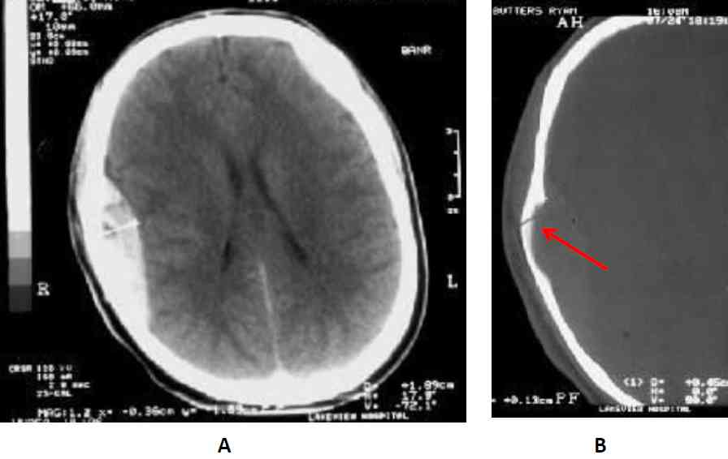

Bienvenue Sur Medical Education
Hématome extradural
Spécialité : pediatrie / traumatologie /
Points importants
-
Accumulation de sang entre la boîte crânienne et la dure-mère après un traumatisme
-
Dans 85-95 % des cas, secondaire à une fracture du crâne lésant les vaisseaux en regard
-
Apparaît dans 1-2 % des traumatismes crâniens et dans 10 % des traumatismes avec coma
-
Facteurs de gravité :
-
personne âgée
-
localisation temporale
-
augmentation du volume de l'hématome
-
évolution clinique rapide
-
anomalie pupillaire
-
HTIC
-
faible score de Glasgow
-
La mortalité est plus importante chez l'enfant < 5 ans et chez l'adulte > 55 ans
-
L'HED est plus fréquent chez l'adulte jeune (60 % des cas) que chez le patient est âgé (< 10 % chez les plus de 50 ans) car, chez ce dernier, la dure-mère adhère plus fortement à la face interne de la boîte crânienne
-
Dans les HED de la fosse postérieure, le patient peut être parfaitement conscient et une minute plus tard brutalement apnéique, comateux, avec un décès possible dans les minutes qui suivent
Présentation clinique / CIMU
SIGNES FONCTIONNELS
-
Possible perte de connaissance initiale
-
Notion d'intervalle libre (seulement dans 1 % des cas)
-
Céphalées
-
Vomissements
-
Convulsions
CONTEXTE
- personne âgée
- localisation temporale
- augmentation du volume de l'hématome
- évolution clinique rapide
- anomalie pupillaire
- HTIC
- faible score de Glasgow
Présentation clinique / CIMU
SIGNES FONCTIONNELS
- Possible perte de connaissance initiale
- Notion d'intervalle libre (seulement dans 1 % des cas)
- Céphalées
- Vomissements
- Convulsions
CONTEXTE
Terrain
- Alcool (troubles de la coagulation)
Traitement habituel
- Anticoagulant, anti-agrégant
- Anti-hypertenseurs
Antécédents
- Diabète
- HTA
- Hémopathie
Circonstances de survenue
- AVP
- Rixe (coup à la tête)
- Chute
- Déterminer le mode de survenue, l’objet, la direction du coup, le degré de violence
EXAMEN CLINIQUE
Neurologique
-
Signes d'HTIC :
- HTA
- bradycardie
- bradypnée
- Noter le score de Glasgow
- Recherche d'un hématome de la boîte crânienne, d'une plaie, d'une embarrure
- Recherche d'une otorrhagie, d'une othorrhée, d'une rhinorrhée
- Taille des pupilles, réflexes photomoteurs
- Recherche de signes d'hémiplégie (controlatérale à la lésion)
-
Triade suggérant une hernie trans-tentorielle :
- coma
- pupilles fixes dilatées
- posture en décérébration (membre supérieur en extension, adduction, rotation interne ; membre inférieur en extension)
Examen général
- Recherche une autre lésion
- Examen complet du traumatisé, de la tête aux pieds (face, thorax, abdomen, hanche, membres, rachis)
SIGNES PARACLINIQUES SIMPLES
- Hémoglobine capillaire
- Glycémie capillaire
- SpO2
- ECG
- BU pour mesurer le glucose si othorrhée ou rhinorrhée
CIMU
Tri fonction de l’état clinique initial
Signes paracliniques
BIOLOGIE
-
Hémostase (recherche de trouble de coagulation)
-
Glycémie
-
Bilan pré-opératoire
-
Toxiques si doute
IMAGERIE
TDM cérébrale
- Toujours demander des coupes cervicales associées (un traumatisé crânien est un traumatisé du rachis cervical jusqu'à preuve du contraire)
- Montre la localisation, le volume, l'effet de masse, d'autres potentielles lésion intracrâniennes
- L'HED forme une lentille périphérique, biconvexe, hyperdense et homogène
- Des zones focales isodenses ou hypodenses à l'intérieur de l'HED signent un saignement actif
-
La visualisation d'air à l'intérieur de l'HED suggère une fracture des sinus
 _947 Hématome extradural
Diagnostic différentiel
-
Hématome sous-dural
-
Hémorragie sous-arachnoïdienne
Traitement
TRAITEMENT PREHOSPITALIER / INTRA HOSPITALIER
Traitement
TRAITEMENT PREHOSPITALIER / INTRA HOSPITALIER
Stabilisation initiale
- Oxygénothérapie
- Pose d'un collier cervical
- Tête du patient surélevée à 30°
- Pose d'une voie veineuse périphérique avec NaCl 0,9%
- Scope
- Contrôle de l'hémodynamique avec remplissage si besoin (lien avec traumatisme crânien)
- Intubation après induction à séquence rapide si détresse respiratoire ou coma
- Traiter une HTIC
- Voir TC grave
Surveillance
-
T°, PA, FC, SpO2, score de Glasgow
Devenir / orientation
-
Transport rapide vers un centre de traumatologie avec neurochirurgie si signes d'HTIC
-
TDM cérébrale le plus rapidement possible
Mécanisme / description
-
70 à 80 % des HED sont localisés dans la région temporo-pariétale, là où le trait de fracture croise l'artère méningée moyenne ou ses branches durales
-
Dans 10 % des cas environ, l'HED est frontal ou occipital (pouvant s'étendre, dans ce dernier cas, au-dessus ou au-dessous de la tente)
-
L'association d'une fracture du crâne et un hématome est moins fréquente chez le jeune enfant
-
Les HED sont généralement d'origine artérielle, mais peuvent résulter d'un saignement veineux dans un tiers des cas
-
Des lésions de sinus veineux peuvent entraîner quelquefois des HED, notamment dans la région pariéto-occipitale ou la fosse postérieure. Les hématomes induits sont plus petits
-
Les hématomes des veines épidurales ne se forment généralement seulement que quand il existe une fracture du crâne avec dépression. Ceci détache la dure-mère de l'os créant ainsi un espace d'accumulation pour le sang
-
Les volumineux HED peuvent induire une déviation de la ligne médiane et une hernie sous-falcorielle du cerveau
-
La compression du tissu cérébral peut toucher le 3ème nerf crânien, entraînant une dilatation pupillaire homolatérale, une hémiparésie controlatérale ou une réponse motrice en extension
-
Les HED sont généralement stables, atteignant leur taille maximale dans les minutes qui suivent le traumatisme. Cependant, dans environ 10 % des cas une évolution peut se faire dans les 24 premières heures (nouveau saignement ou suffusion continue)
Bibliographie
-
Price DD, Wilson SR. Epidural hematoma. http://emedicine.medscape.com/article/824029-overview
Devenir / orientation
- Transport rapide vers un centre de traumatologie avec neurochirurgie si signes d'HTIC
- TDM cérébrale le plus rapidement possible
Mécanisme / description
-
70 à 80 % des HED sont localisés dans la région temporo-pariétale, là où le trait de fracture croise l'artère méningée moyenne ou ses branches durales
-
Dans 10 % des cas environ, l'HED est frontal ou occipital (pouvant s'étendre, dans ce dernier cas, au-dessus ou au-dessous de la tente)
-
L'association d'une fracture du crâne et un hématome est moins fréquente chez le jeune enfant
-
Les HED sont généralement d'origine artérielle, mais peuvent résulter d'un saignement veineux dans un tiers des cas
-
Des lésions de sinus veineux peuvent entraîner quelquefois des HED, notamment dans la région pariéto-occipitale ou la fosse postérieure. Les hématomes induits sont plus petits
-
Les hématomes des veines épidurales ne se forment généralement seulement que quand il existe une fracture du crâne avec dépression. Ceci détache la dure-mère de l'os créant ainsi un espace d'accumulation pour le sang
-
Les volumineux HED peuvent induire une déviation de la ligne médiane et une hernie sous-falcorielle du cerveau
-
La compression du tissu cérébral peut toucher le 3ème nerf crânien, entraînant une dilatation pupillaire homolatérale, une hémiparésie controlatérale ou une réponse motrice en extension
-
Les HED sont généralement stables, atteignant leur taille maximale dans les minutes qui suivent le traumatisme. Cependant, dans environ 10 % des cas une évolution peut se faire dans les 24 premières heures (nouveau saignement ou suffusion continue)
Bibliographie
-
Price DD, Wilson SR. Epidural hematoma. http://emedicine.medscape.com/article/824029-overview
Bibliographie
- Price DD, Wilson SR. Epidural hematoma. http://emedicine.medscape.com/article/824029-overview
Auteur(s) : Patrick PLAISANCE